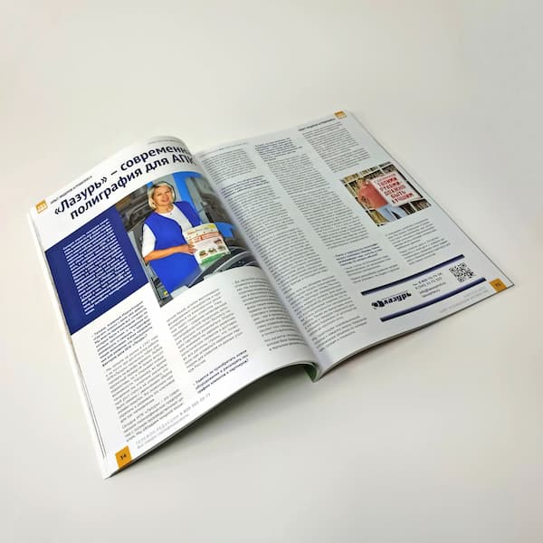

Издательско-полиграфический комплекс «Лазурь» стал героем публикации в престижном аграрном журнале «Нивы России». Статья подробно рассказывает о роли современной полиграфии в развитии агропромышленного комплекса и о том, как «Лазурь» помогает предприятиям АПК успешно продвигать свою продукцию на рынке.
В интервью с учредителем компании Татьяной Деевой особое внимание уделяется достижениям предприятия за 28 лет работы на рынке. За это время «Лазурь» превратилась в современное полиграфическое предприятие с полным производственным циклом, способное решать самые сложные задачи клиентов.
Особое внимание в статье уделяется успешному опыту долгосрочного сотрудничества с Аграрным МедиаХолдингом «Светич» и журналом «Нивы России». Это партнёрство служит примером надёжного делового взаимодействия и высокого качества предоставляемых услуг.
«Лазурь» продолжает активно развиваться, инвестируя в модернизацию оборудования и расширение логистических возможностей. Компания успешно работает не только с клиентами Уральского региона, но и обеспечивает доставку продукции по всей России, подтверждая свой статус надёжного партнёра в сфере полиграфических услуг.
Современное оснащение и высококвалифицированные специалисты позволяют «Лазурь» предлагать клиентам комплексные решения для развития их бизнеса, что особенно важно в условиях трансформации экономики и активного развития агропромышленного сектора.